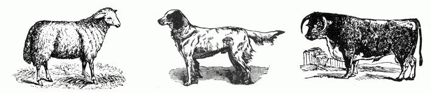

Whether you live in a city apartment or a wilderness cabin, if you own pets or livestock someday you will probably have to care for an injured animal. And, strangely enough, a pampered Persian cat, a backwoods pack horse or a suburban family cow all heal in basically the same fashion and all respond to similar treatment.
Most people when suddenly confronted by a wounded animal feel that they MUST DO SOMETHING! More often than not what they do is wrong because, in their haste, they forget that Nature has been healing creatures for eons with rather good results. Sometimes, a little benign neglect on the part of the owner (and many veterinarians) will do much to aid the ultimate well-being of an injured animal. The most sacred precept of Medical Practice is: If you cannot help your patient; at least, DO HIM NO HARM! So keep this in mind; Nature heals, we can only help.
If one of your animals is injured, the first thing to do is to control any severe hemorrhage. A stream of blood that pulsates in rhythm with the heart-beat indicates a severed artery. No such rhythmic pulsations are seen if only a vein is damaged. In either case, if bleeding is profuse, apply a tight compress of some sort to the area. The pressure applied to the wound helps to stem the flow of blood and favors the formation of a firm clot.
If the wound is in a position where it can be easily bandaged, a bandage can be combined with the compress. However, don't make it so tight that it cuts off circulation. Tourniquets should not be used except as a last resort, as they frequently do more harm than good.
Another warning! Just because Good Old Uncle Ned used to do it, don't subject the wound to flour, ashes or other "gunk" that is reputed to stop bleeding. Most of these substances have no effect on hemorrhage and they can be a major source of contamination and irritation.
The question that logically arises then is: "Well, what should I put on a wound?" It would be more appropriate to ask, "Should I put anything on it at all?" More people do more harm to their animals by "putting something on it" than you can imagine; and you wouldn't believe the variety of substances that have been used in a vain attempt to speed healing.
Irritating, caustic materials such as turpentine, coal oil, or salt are never indicated for use on wounds, even if they would kill germs . . . which they won't. It is better to have a mildly infected wound than one in which the ability to heal itself has been destroyed by the use of strong chemicals. Powders should be avoided because they tend to combine with fluids from the wound and may form a crust, thus sealing in the offending bacteria and providing an ideal environment for bacterial growth.
Actually, the only reason to use any topical antiseptics on a wound is to remove the dirt or debris that may be present and to reduce the numbers of contaminating bacteria. Mild soap and water will serve effectively in both capacities, and will not further damage the injured tissues and thus impede the normal healing process. An oily substance helps to keep the wound soft, and avoids the drying and cracking of the wound edges that would also interfere with healing.
Now that you have the bleeding stopped and the wound clean and sanitized, you should take steps to see that any widely separated edges of skin are brought into a position of "togetherness" so that fast, scar-free healing can take place. Sometimes this can be done by skillful bandaging, but if this is impossible the wound may have to be sutured for best results. A word of caution: If a bandage is not required to control hemorrhage, to exclude dirt or to hold the edges of the wound together, don't use one. Most wounds will heal more quickly if they're exposed to the air.
In summary then, the primary considerations in dealing with any wounds are: (1) Control hemorrhage, (2) If necessary, clean the wound and keep it clean, (3) Keep the edges of the wound together, if at all possible, (4) Don't use anything on the wound that will interfere with the normal healing process.
The different species of farm animals vary greatly in the speed with which they heal. For the technical-minded, this difference is mainly caused by differences in the rate of leucocyte mobilization (LMR), or the speed with which the white bloodcells are able to get to a wound and begin to repair the damage.
Horses and ponies are by far the most difficult of all domestic animals to treat. Not only are they seemingly accident-prone, but they also panic easily when hurt and they have a very slow LMR. Sheep, goats, and poultry are sometimes prey to the ravages of dogs or wolves, but if their wounds are not too severe, they heal quickly with adequate care.
Beef cattle are usually not subject to too many injuries, but dairy cattle and dairy goats are very susceptible to damage to their udders and teats. Dogs are sometimes subjected to the unhealthy effects of encounters with barbed wire, automobiles, or other dogs or wild animals. Hogs or pigs almost never get hurt and cats are nearly immune to injuries except for the bites and scratches from the perennial, intra-species debate over who gets a date with the pretty Tabby that just moved into the neighborhood.
Many times the reason people are forced to call a veterinarian is because they fail to use any advance planning. This lack of anticipation of livestock accidents and the lack of preparation for emergencies, can be dangerous to your livestock and pets and costly to you. So, plan ahead . . . assemble the products discussed below into a first aid kit, keep it stocked, and keep it handy. You may never need to use the kit, but if you do, it will be worth it's weight in gold.
Vaseline is a very good wound dressing. It coats a wounded surface, prevents the entrance of dirt onto the surface of the wound, and keeps the skin soft. The addition of a small amount of Iodine solution to the vaseline adds enough antiseptic qualities to make the mixture an excellent anti-bacterial.
Tincture of Iodine (Iodine in an alcohol base) is a strong disinfecting material. It's penetrating properties recommend it for use on the navel cords of new-born animals and for injuries to the hooves of large domestic animals. It should not be used full strength on open wounds or abrasions.
Lugol's Iodine Solution (Iodine in a water base) is less effective topically than the Tincture, but it has the advantage of being effective when given orally as an anti-infective. The dosage is 1 or 2 drops for each 5 lbs. of body weight daily. Thus, the daily dose for a 1000 lb. cow or horse would be 200 to 400 drops and since 100 drops is approximately equal to one teaspoonful, this would amount to about 2 to 4 teaspoonfuls. A 20 lb. dog would get 4 to 8 drops daily. This dose can be administered in the feed or the water, and should not be continued for longer than 10 days without a 10 day rest period between courses of treatment. Lugol's Iodine Solution is classified as a prescription drug if you indicate to the druggist that it is to be used on humans but no restrictions are placed on any use for animals. A pint should cost less than $3.00. Never, never use any iodine products on cats unless you hate cats and are trying to dispose of them. Cats are very susceptible to iodine poisoning.
Keep plenty of Castor Oil on hand. In addition to it's well known laxative properties, it's also a good wound dressing and it can be used for eye-drops. If rubbed liberally into warts, castor oil will generally have a curative effect on most of them. Don't worry if you get some on your hands; castor oil is also a good hand lotion.
Pine tar is a g ood insect repellant. If you live in an area where "screw-worms" or "flesh-flies" are prevalent this product will help to control their attacks on wounds. Pine tar is soluble only in oil, so use castor oil or other vegetable oil to thin it to the desired consistency. It's best to apply pine tar only to the tips of the hair surrounding a wound; this will avoid irritating the wound and causing loss of hair at the site of application. Pine tar can also be used on bandages to discourage a patient from chewing on them.
The dried or fresh leaves or roots of the comfrey plant (Symphytum officinale) are useful to speed healing in hardto-heal wounds or ulcerated areas on the skin when the macerated leaves or roots are used as a poultice on the affected area. The active ingredient in this plant is "allantoin". a substance which stimulates the growth of epithelial (skin) cells and thus decreases the time required for healing of the wound to take place. Even though comfrey may be found growing wild, it's best to plant some on the homestead to assure yourself of a fresh supply that you can depend upon. The plant is very easy to grow.
Cod Liver Oil or Wheat Germ Oil can be used as protectants on wounds but their greatest merit is as a dietary source of Vitamin A, D and E. These vitamins are necessary to the normal functioning of the healing process. Either one or both can be added to the ration of any injured animal or, better yet, use them regularly to insure the health of all your livestock. A healthy, well nourished animal heals much faster than one that is deficient in any one of the required dietary substances.
Include in your kit a generous supply of cloth or gauze that can be used for bandages, compresses and dressings. Don't worry too much about the absolute sterility of these dressings so long as they are clean.
One other aspect of "planning ahead" I should mention is vaccination. While I do not recommend the indiscriminate use of any vaccine; there are two diseases commonly associated with wounds that are best prevented by routine immunization. These diseases are Rabies and Tetanus.
As you probably know, Rabies is spread by the bite of infected animals and is almost always fatal. I say "almost" because just recently one case has been cured. The vaccination for dogs is quite effective and lasts up to three years. The use of the vaccine in other animals is not generally recommended unless an unusual situation exists.
Tetanus, or Lockjaw, is a disease that all animals can get but it is most troublesome in horses. The causative organism will not grow in the presence of oxygen however: It requires a deep puncture wound that seals over and excludes air. A very effective vaccine is available for tetanus and a booster should be administered once a year. In an emergency, an unvaccinated animal can be given Tetanus Antitoxin, but it's protection lasts only about ten days. Once symptoms of tetanus develop, treatment is usually very disappointing.
Please bear in mind that in making the above recommendations, I assume that you do not have immediate access to a qualified veterinarian. If a vet is available, do not hesitate to contact him for advice and service, especially if your efforts at first-aid do not have the desired results.
I hope you will never have to deal with a wounded animal but, if you do, please don't ever put yourself in a situation where you'll have to tell a vet: "Doc, I can't understand it. I've tried salt, sheep dip, ashes, turpentine, spider webs, sulfur, creosote, and some stuff my granddaddy had in an unlabeled bottle; and that dang sore still won't heal . . . "
|
 |
|
|